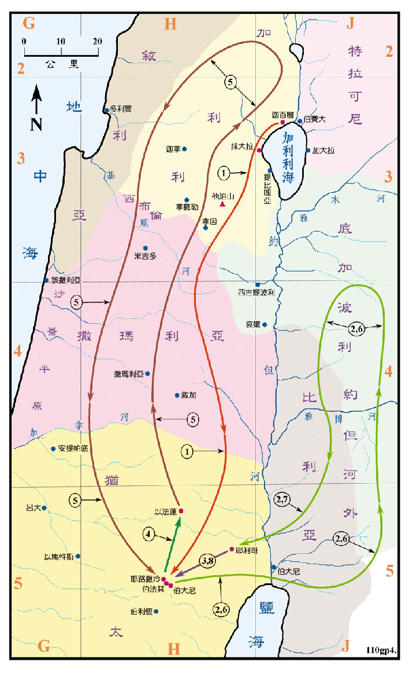

主后29至主后30年

行动线说明
| 序号 | 圣经 | 说明 |
|---|---|---|
| 1 | 太19:1，路9:51-56，约7:10 | 耶稣上耶路撒冷，途中在撒玛利亚境内某地被拒。 |
| 约7:2-10:21 | 主耶稣到了耶路撒冷，白天在殿中工作，晚上到橄榄山休息。请参看<福图05> | |
| 路10:1-24 | 耶稣差遣七十个人出去传福音。 | |
| 2 | 路10:25-17:10，约10:22-42 | 耶稣去到约但河外工作。 |
| 3 | 约11:1-44 | 主耶稣在伯大尼叫拉撒路复活。 |
| 4 | 约11:54-57 | 耶稣离开犹太，到旷野中的以法莲城去和门徒同住。从那日起，犹太人就商议要杀耶稣。 |
| 5 | 路17:11 | 耶稣往耶路撒冷去。经过撒玛利亚和加利利。 |
| 6 | 太19:1-20:28，可10:1-45，路18:1-34 | 耶稣再到约但河外去工作。 |
| 7 | 太20:29-34，可10:46-52，路18:35-19:27 | 耶稣在耶利哥医治好瞎子，见税吏长撒该。 |
| 8 | 约12:1 | 耶稣到伯大尼去马大的家。 |
主耶稣传道的第三年似乎多在撒玛利亚、犹太和约但河外，只到加利利去过一次。他开始差派门徒出去传道，信服和跟随他的人也越来越多，但是在另一方面，由於主耶稣重新诠释旧约的经文，拒绝接受祭司的权威，又行了许多的神迹奇事，都使得犹太的统治者惴惴不安，就产生了除去耶稣的念头，开始设法逼迫他，所以死亡的阴影笼罩着耶稣在世的最后一年，主耶稣也预言了他的死和复活，作了为世人被钉十字架牺牲的准备。